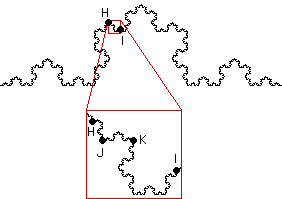

| Finally, suppose we take any pair of points, H and I for example, in the Koch curve. |
| Self-similarity of the Koch curve guarantees between H and I there is a complete copy of the Koch curve (between J and K in the picture), |
| and so the previous result shows the distance between H and I is infinite. |
|  |
| Summarizing: for ANY pair of points of the Koch curve, the distance between the points is infinite. |
| Pick any point of the Koch curve. No point of the curve is 1 cm from the point you picked. Certainly, length is a useless measure for the Koch curve. |
Return to Koch Curve Length Paradox.